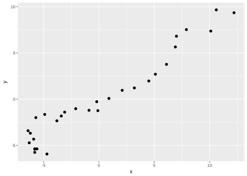
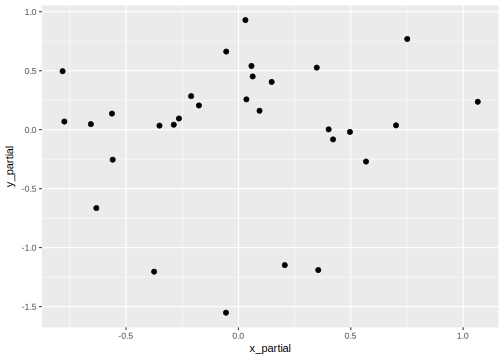

Chapter 5 Multiple Regression
5.1 Omitted Variable
\[ Y_i = \beta_0 + \beta_x X + \beta_z Z \] Suppose that \[ y_i = x_i \beta + z_i \delta + \epsilon_i \] Use least squares calculation, \[ \hat{\beta} = (\mat{X}\T \mat{X})^{-1} \mat{X}\T \vec{y} \] Sustitute \(y\), \[ \begin{aligned}[t] \hat{\beta} &= (\mat{X}\T \mat{X})^{-1} \mat{X}\T (\mat{X} \vec{\beta} + Z\delta + \epsilon) \\ &= \mat{X}\T \mat{X})^{-1} \mat{X}\T \mat{X} \vec{\beta} + \mat{X}\T \mat{X})^{-1} \mat{X}\T Z \delta + + \mat{X}\T \mat{X})^{-1} \mat{X}\T \epsilon \end{aligned} \] Taking the expectation and noting that \(\E(X' \epsilon) = 0\), \[ \begin{aligned}[t] \E(\hat{\beta} | X) &= \beta + \mat{X}\T \mat{X})^{-1} \mat{X}\T Z \delta \\ &= \beta + \text{bias} \end{aligned} \] There is no bias if either of these is true
- \(\delta\) is 0 (Z has no effect on \(Y\))
- \(Z\) is uncorrelated with \(X\)
5.2 What to do about Omitted Variable Bias
There are two old (but simple) preliminary tests
- Regress \(y\) on \(\hat{y}\) and \(\hat{y}^2\) (Stata command linktest) - tests that the dependent variable has the correct functional form
- Ramsey RESET test (stata command ovtest)
Coefficient Inclusing - will it reduce selection bias
- Oster and similar tests - e.g. Coefficient Comparison Tests
- Balancing Tests - regress x on the treatment.
Adding covariates sequentially doesn’t make sense (but see Gelbach)
5.3 Regression Anatomy
\[ \hat{\beta}_k = \frac{\cov{y_i, \tilde{x}_{ki}}}{\var(\tilde{x}_{ki})} \]
See https://mpra.ub.uni-muenchen.de/23245/1/reganat.pdf for a proof.
5.4 More Information
5.4.1 Simpson’s Paradox
- See Samuels (1993) for more discussion of Simpson’s Paradox
- Moore (2005) collects and succinctly describes several examples of Simpson’s Paradox
- An interactive visualization of the Simpson’s Paradox
- Horton. 2015. Fun with Simpson’s Paradox: Simulating Confounders
- Horton. 2012. Example 9.20: visualizing Simpson’s paradox
- See the Wikipedia Page
- US Median Wage by Education Level. Overall wages have risen, but within every group, the wage has fallen.
- Nielsen. Reinventing Explanation has a visual explanation of the Simpson’s paradox
- Gelman. Understanding Simpson’s Praradox Using a Graph. April 8, 2014. Discusses the Nielsen post, provides other visualizations, and notes how aggregation problems arise even in non-causal cases.
- Armstrong and Wattenberg (2014) introduce the Comet Chart for visualizing Simpson’s Paradoxes. See this page for code and examples, including an R implementation.
reganatomy <- function(model, variable) {
variable <- if (is.character(variable) & 1 == length(variable)) {
variable
} else {
deparse(substitute(variable))
}
mod.mat <- model.matrix(model)
var.names <- colnames(mod.mat)
var <- which(variable == var.names)
if (0 == length(var)) {
stop(paste(variable, "is not a column of the model matrix."))
}
response <- model.response(model.frame(model))
if (is.null(weights(model))) {
wt <- rep(1, length(response))
} else {
wt <- weights(model)
}
res0 <- as_tibble(lm(cbind(mod.mat[, var], response) ~ 1, weights = wt)$residual)
names(res0) <- c("y", "x")
res <- as_tibble(lsfit(mod.mat[, -var], cbind(mod.mat[, var], response),
wt = wt, intercept = FALSE)$residuals)
names(res) <- c("y_partial", "x_partial")
bind_cols(res0, res)
}
data("Bfox", package = "car")
m1 <- lm(partic ~ tfr + menwage + womwage + debt + parttime, data = Bfox)
an <- reganatomy(m1, "womwage")
ggplot(an, aes(x = x, y = y)) + geom_point()
ggplot(an, aes(x = x_partial, y = y_partial)) + geom_point()
betawt <- function(model, variables = NULL) {
X <- model.matrix(model)
var_names <- colnames(X)
variables <- variables %||% setdiff(colnames(X), "(Intercept)")
badvars <- setdiff(variables, var_names)
if (length(badvars)) {
stop("Variables not found in model matrix: ", paste0(badvars, collapse = ", "))
}
wt <- model$weights
offset <- model$offset
f <- function(i) {
ii <- which(i == var_names)
mod2 <- if (!is.null(wt)) {
lm.wfit(X[ , -ii], X[, ii], wt, offset = offset)
} else {
lm.fit(X[ , -ii], X[, ii], offset = offset)
}
weighted.residuals(mod2) ^ 2
}
as_tibble(set_names(map(variables, f), variables))
}
data("Bfox", package = "car")
m1 <- lm(partic ~ tfr + menwage + womwage + debt + parttime, data = Bfox)
an <- betawt(m1, c("womwage", "tfr", "debt", "parttime"))Comments on Aronow and Samii
- https://tompepinsky.com/2012/02/27/regression-estimates-the-conditional-variance-weighted-zzzzzzzzzzz/
- https://tompepinsky.com/2013/08/08/regression-representativeness-and-external-validity/
- https://tompepinsky.com/2012/02/08/identification-is-neither-necessary-nor-sufficient-for-policy-relevance/
- https://afinetheorem.wordpress.com/2016/02/26/does-regression-produce-representative-estimates-of-causal-effects-p-aronow-c-samii-2016/
ytilde <- lm(prestige ~ type, data = Duncan)$residuals
xtilde <- lm(income ~ type, data = Duncan)$residuals
lm(ytilde ~ xtilde - 1)##
## Call:
## lm(formula = ytilde ~ xtilde - 1)
##
## Coefficients:
## xtilde
## 0.6758lm(prestige ~ income + type, data = Duncan)##
## Call:
## lm(formula = prestige ~ income + type, data = Duncan)
##
## Coefficients:
## (Intercept) income typeprof typewc
## 6.7039 0.6758 33.1557 -4.2772Duncan <- Duncan %>%
group_by(type) %>%
mutate(prestige_res = prestige - mean(prestige),
income_res = income - mean(income))
lm(prestige_res ~ income_res - 1, data = Duncan)##
## Call:
## lm(formula = prestige_res ~ income_res - 1, data = Duncan)
##
## Coefficients:
## income_res
## 0.6758lm(prestige ~ income_res, data = Duncan)##
## Call:
## lm(formula = prestige ~ income_res, data = Duncan)
##
## Coefficients:
## (Intercept) income_res
## 47.6889 0.6758References
Samuels, Myra L. 1993. “Simpson’s Paradox and Related Phenomena.” Journal of the American Statistical Association 88 (421). Informa UK Limited: 81–88. doi:10.1080/01621459.1993.10594297.
Moore, Tom. 2005. “Simpson or Simpson-Like Paradox Examples.” http://www.math.grinnell.edu/~mooret/reports/SimpsonExamples.pdf.
Armstrong, Zan, and Martin Wattenberg. 2014. “Visualizing Statistical Mix Effects and Simpson'\(\mathsemicolon\)s Paradox.” IEEE Transactions on Visualization and Computer Graphics 20 (12). Institute of Electrical; Electronics Engineers (IEEE): 2132–41. doi:10.1109/tvcg.2014.2346297.